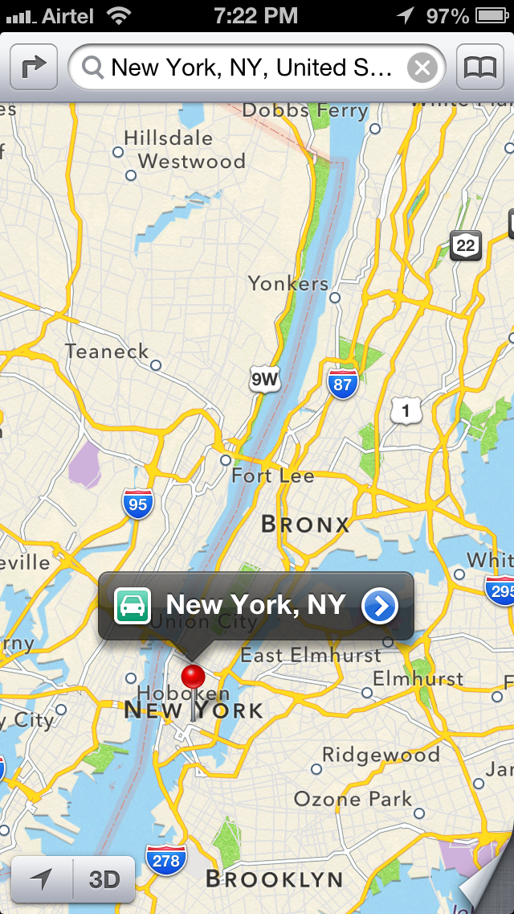
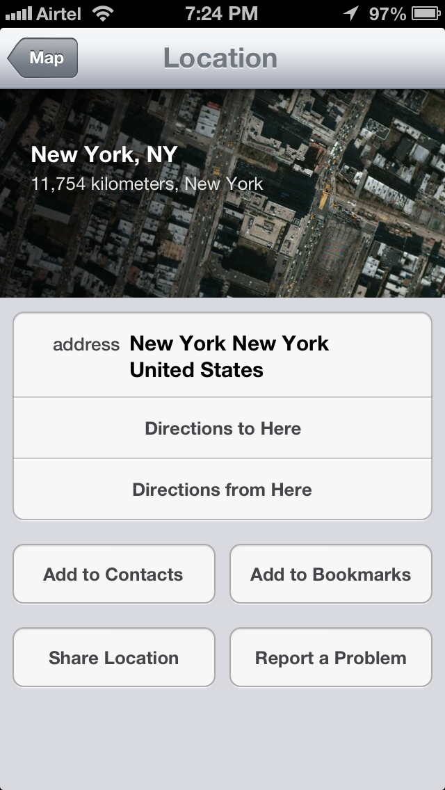
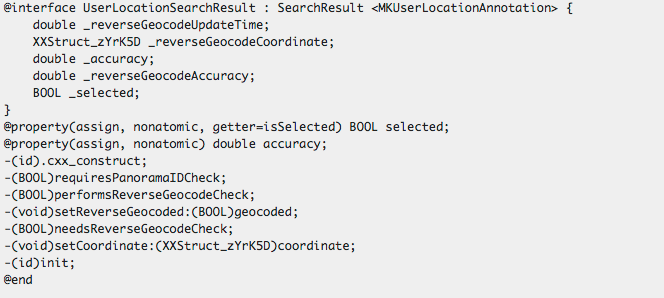
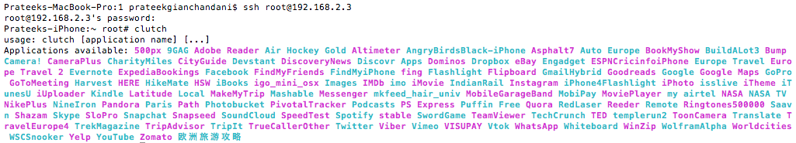
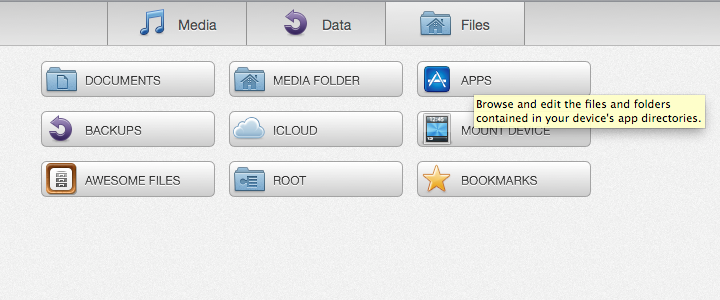

Introduction
Have you ever checked out an IOS app and thought it was cool, and wondered if you could find some information about the source code of the app, the third-party libraries it uses, or how the code is designed internally? Have you ever wondered if it was possible to dump all the images, plist files used in any app either preinstalled on your device or downloaded from the App store? If the answer is Yes, then you have come to the right place.
In this article, we will look at how we can analyze any preinstalled app on your device or any other app downloaded from App store and discover things about the source code of the app like the classes that it uses, the names of the view controllers it uses, the internal libraries, and even intricate details like the variables and methods names used in any particular class or view controller. We will then look at how we can decrypt the applications downloaded from the App store and dump all the images, plist files that the app uses.
See previous article “IOS Application security Part 1 – Setting up a mobile pentesting platform” by clicking here.
Dumping class information for Preinstalled apps on the device
Now we are at a stage that we can analyze apps for class information. So let’s dump the class information for the Apple Maps app. The first step would be to locate the Apple Maps app executable. All IOS apps that come preinstalled with the device are stored in the directory /Applications. So let’s navigate to that directory.
Click to Enlarge
Here you will see all the apps that come preinstalled with the device. Now let’s navigate inside the Maps app directory and list the directories.
Click to Enlarge
As you can see, we can see all the images, plist files etc used by this app. We will discuss later how it is possible to fetch all the images and other files from a particular IOS app. Anyways, hidden in all this mess is an executable for the app with the name Maps as can be seen on the left side in the image below. Note that the name of the executable will be the same as the name of the app. Note that we can see some pdf’s in the app bundle as well. I really don’t see the need of including a pdf file in the bundle.
Click to Enlarge
To dump the class information for this app, just use the command class-dump-z Maps
Click to Enlarge
As you can see there is just too much output in the terminal right now, hence its better to save the output to a file, in this case with the filename class-dump-Maps.
You can now use sftp to ftp into the device and download the file. You can fetch any file with the command get followed by the path of the file as shown below.
Click to Enlarge
Since the file is now downloaded locally on the system, let’s open it up in TextMate (you can use textedit or any other app as well)
Click to Enlarge
We can learn a lot about the way the code is designed just by looking at the interface files. For e.g over here you can see a View controller named InfoCardController. As you might have already guessed, this is the VC to display more info about a particular location when we tap on the right arrow button as shown in the image below.

Now lets have a look at this view in the app. This page is actually displayed by InfoCardViewController which we found from class-dump-z information.

If you look at this image and the class information above, you can easily see what are the methods names that get called when you tap on these buttons. For e.g if i tap on Direction to here, the method that will get called is
-(void)_directionsTo:(id)to person:(void*)person property:(int)property identifier:(int)identifier;
Similarly, if i tap on Add to Bookmarks, the method that will get called is
-(void)_addToBookmarks:(id)bookmarks person:(void*)person property:(int)property identifier:(int)identifier;
You can find a lot of other information from the app as well, for e.g here is a class named UserLocationSearchResults which inherits from SearchResult.

How much you can explore here is only up to your curiosity :).
Dumping class information for apps downloaded from the App store
Their are two important things to know if you want perform analysis of the apps that you download from the App store.
To decrypt the apps, we will be using a command line tool called Clutch. Please note that Clutch was being offered by Hackulous which has been shut down a few months back. But the binary for Clutch is still available on the internet.
Now you need to upload the binary onto your device. To do that, we are going to use sftp. To upload a file onto the device, just use the put command.
Click to Enlarge
Now, ssh into your device and type clutch. This will give you a list of all the apps that could be cracked.

To crack a particular app, just type clutch app-name For e.g if we want to crack the Facebook app, we will type clutch Facebook
Click to Enlarge
Once it is done cracking, it will tell you the location where it has saved the ipa file. Now an ipa file is just a compressed version of the whole app bundle. To unzip it, just use the unzip command and save it to a directory by using the -d command as shown in the figure below. Note that you can also copy this ipa file on your system using sftp and then unzip it over there. You will then have access to all the images of the app as well as any other files that may be present in the unzipped folder.
Click to Enlarge
Now that we have the decrypted file, we can use class-dump-z to dump the class information for it and save it in a file which in this case is named class-info-Facebook.
Click to Enlarge
Once this is done, you can exit the ssh session, log in via sftp and then download the class-info-Facebook file.
Click to Enlarge
You can now check out this file using any text viewer. For e.g here is a protocol named FBFacebookRequestSender which has methods for sending asynchronous requests as well as a method to check if the Facebook Session is valid or not.
Click to Enlarge
Fetching images and other files from a particular app.
As discussed previously in the article, one of the methods would be to use sftp to fetch all the files that you want from that app’s directory. However, there are much easier ways to do this, one of which is to use iExplorer. Download it from the official website. Once this is done, just open it up and make sure your device is connected to the system via USB.
Click to Enlarge
To view the filesystem, just click on files.

To check out files for a particular app, click on Apps
Click to Enlarge
As you can see, it is very easy to browse the filesystem and upload/download files. In this case, lets download all the image and files present in the Facebook app. On the left side, look for Facebook and click on it. This will take you to the directory containing Facebook app files. All the images and files are containing inside the Facebook.app directory.
Click to Enlarge
To download all the files, just press Cmd + A, and right click and select Export to Folder. Then choose the location where you want to save all the files.
Conclusion
In the first two parts of this article, we have learnt how to setup a mobile auditing environment on a jailbroken device. We then learnt how to dump the class information for any particular app and use it to understand the design of the code and its internal workings. We also learnt how to decrypt an app downloaded from the App store and audit it for information. We then learnt how to un-munge images from apps using both sftp and iExplorer.
Well, the good thing is that it is possible to know all the methods that get called by using the class information that we get from class-dump-z. But is it possible to perform some runtime modification in the app? For e.g if a method like -(BOOL)isFacebookSessionValid returns false in a particular case, is it possible for us to manipulate the app in such a way that it returns YES and hence let the application do unexpected things? Further, is it possible to create our own custom method and execute it instead of this method whenever this method gets called? Is it possible to modify the values of instance variables during runtime, or after any specific instruction? The answer is YES, and we will learn about it in the next article :).